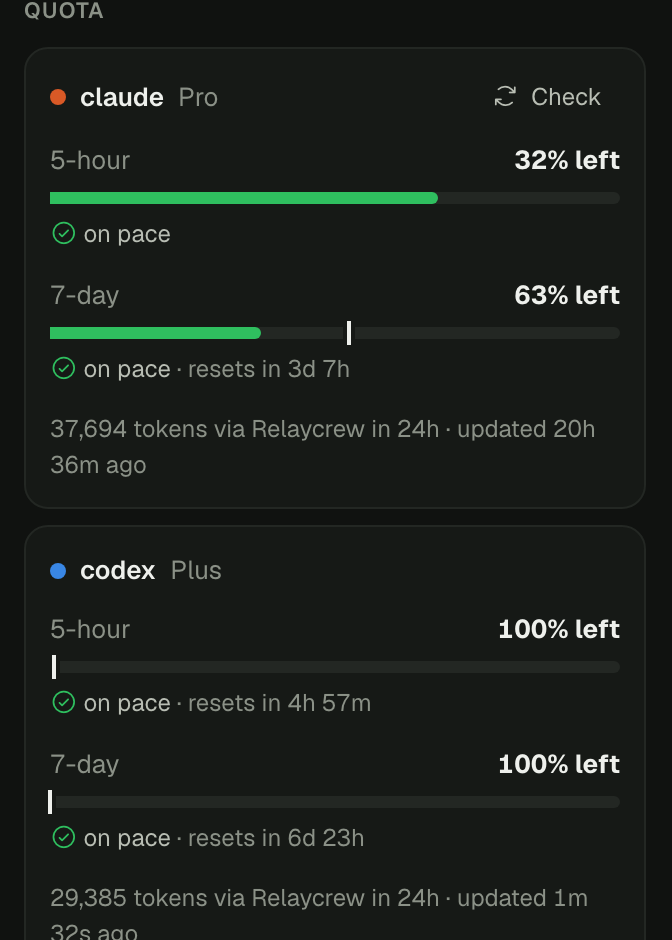
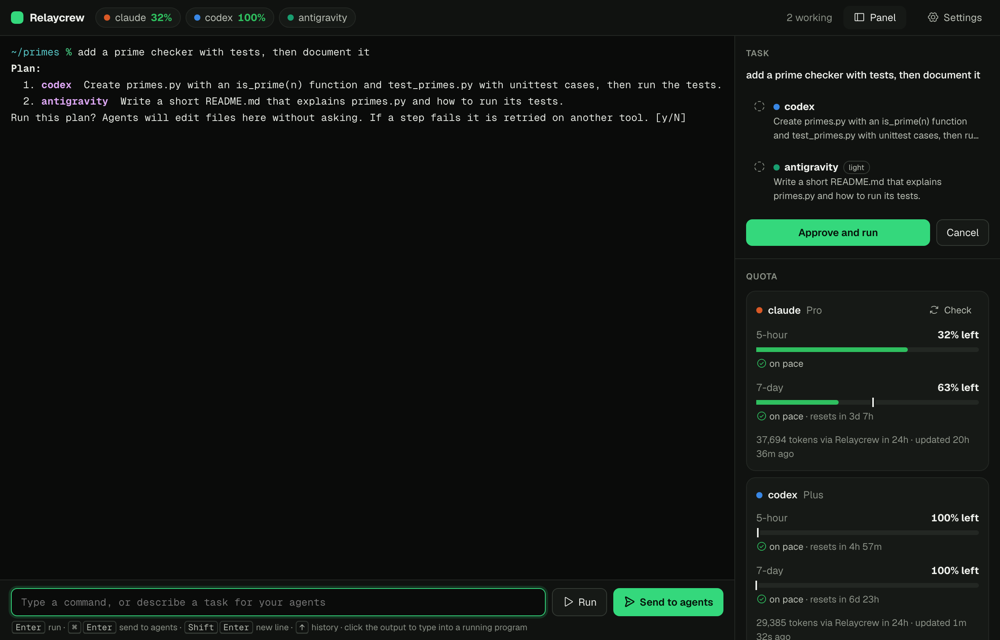
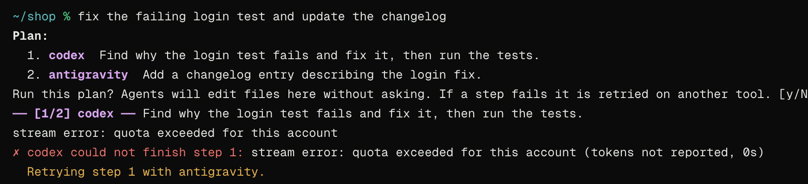
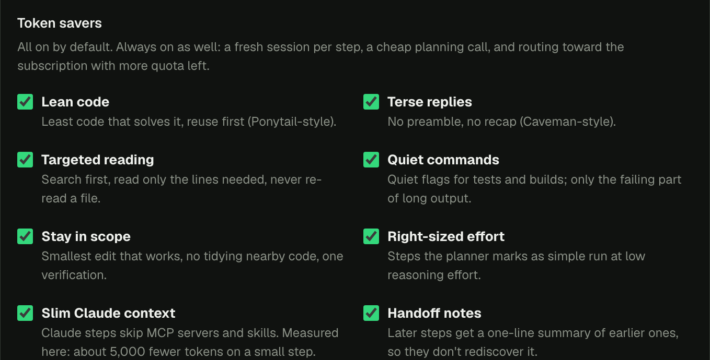

Quota you can read
Each subscription shows what is left in its 5-hour and 7-day windows. The bar turns amber when you are on course to run out early.

Describe a task. Relaycrew splits it across Claude Code, Codex and Antigravity by strength and remaining quota.
Scripted demo, made-up numbers
Type the task in plain words. Commands still run as commands.
See which agent gets each step. Nothing touches your files until you say yes.
Steps run in order with tokens and time. A failed step moves to the next agent.
Notes about the project are kept in its own folder and given to the next task.
A real terminal on the left. On the right, the plan as steps, what each subscription has left, and every agent running on your machine.

Each subscription shows what is left in its 5-hour and 7-day windows. The bar turns amber when you are on course to run out early.

When an agent errors out or hits its limit, Relaycrew says why and retries that step on another one you have switched on.

Simulated Codex failure from our test suite
Eight switches and three built-in habits keep each step lean. The one measured so far, on a small Claude step:
20,078 → 20,078 tokens

Agents leave notes in the project's .relaycrew folder. The next task starts already knowing them.
Example notes
Model, status, CPU and running time, including agents you started somewhere else.
No account, no Relaycrew server, no telemetry. Your agents keep using their own logins.
The same panel opens as an editor tab, in the folder you are working in. It shares settings and usage history with the desktop app.
.vsix for Apple Silicon Macs.Extensions: Install from VSIX.Relaycrew: Open.Each one drives the same engine the app ships with, and the interface ones click and type like a person would. Failures are forced with stand-in agents, so the awkward cases get tested without spending anyone's quota.
Free while it is in early testing. You bring the agents and their subscriptions.
Checking which installers are available.
Apple Silicon Macs, M1 or newer.
64-bit installer. Early build with fewer features.
Apple Silicon Macs. Installs from a file.
Planned. It has not been built yet.
The app is not notarized by Apple yet. Drag it to Applications, run xattr -cr /Applications/Relaycrew.app once in Terminal, then open it normally.
Claude Code, Codex and Antigravity. Relaycrew finds whichever of claude, codex and agy are installed and signed in on your machine. It does not include or resell any of them.
No. There are no Relaycrew servers. It runs the agent programs already on your computer, and each one talks to its own provider exactly as it does when you run it yourself.
You approve the plan first. After that, agents edit files inside the folder you ran the task in without asking again, so use it in a project under version control.
Short notes and a log of finished tasks, as plain text files in a .relaycrew folder inside each project. You can read, edit or delete them, and switch the feature off in Settings.
It is an early build. The installer exists, but the list of running agents and typing tasks in plain words are not wired up on Windows yet.